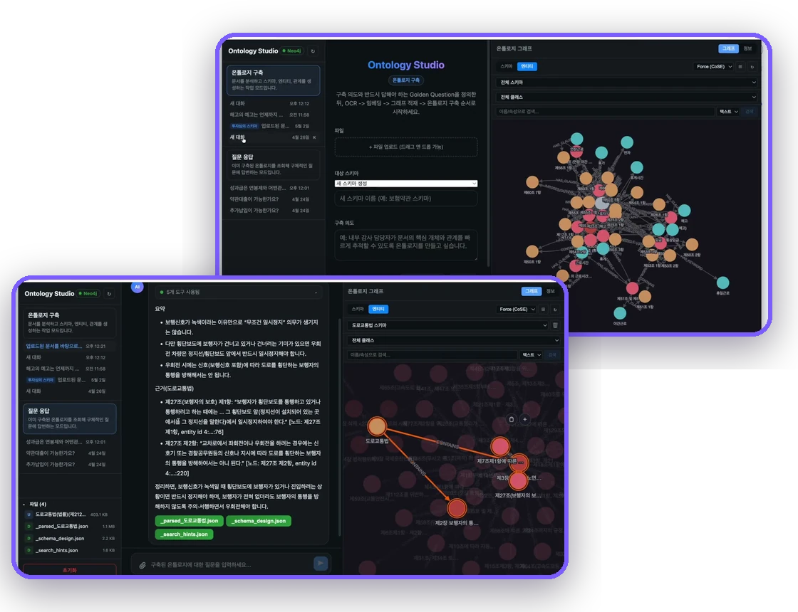

Spec-Driven Development(SDD) 기반 AI 소프트웨어 설계·구현 자동화
Robo Architect는 코드가 아닌 명세(Spec)를 중심에 두는 Spec-Driven Development 도구입니다. 자연어 요구사항에서 시작해 영향도 분석 → 샌드박스 구현 → 검증 → 반영으로 이어지는 프로포절(Proposal) 라이프사이클을 통해 명세와 구현을 항상 일치시키며 소프트웨어의 변경을 관리합니다.
DDD(도메인 주도 설계)로 문제 영역을 모델링하고 BDD(행위 주도 개발)의 인수 조건으로 검증하여, 기획자·아키텍트·개발자가 하나의 명세 위에서 협업하고 Claude Code 스킬 엔진이 검증된 코드를 자동으로 생성합니다.
주요 기능

Ontology Studio 연동
에이전트의 지식지도로 이어집니다
Robo Architect가 설계한 도메인 모델(Aggregate·도메인 이벤트·유비쿼터스 언어)은 Ontology Studio의 지식 그래프로 축적됩니다. 설계와 구현이 쌓일수록 시스템 전체가 하나의 온톨로지(지식지도)가 되고, AI 에이전트는 이 지식지도를 참조해 도메인을 이해하고 더 정확한 변경을 수행합니다.
두 제품은 서로 자유롭게 오갑니다 — Robo Architect의 설계를 Ontology Studio에서 그래프로 탐색하고, Ontology Studio가 문서에서 추출한 도메인 지식을 다시 설계 근거로 역참조합니다. 명세와 지식이 한 궤도에서 순환합니다.
프로포절 라이프사이클
요구사항 한 줄이 검증된 코드가 되기까지, Robo Architect는 다음 흐름으로 동작합니다
1. 프로포절 작성
2. 영향도 분석 & 작업 분해
3. 샌드박스 구현
4. 검증 & Accept
왜 Robo Architect 인가
Robo Architect는 유행하는 AI 코드 생성 도구가 아니라, 검증된 소프트웨어 공학 사상 위에 세워진 Spec-Driven Development 플랫폼입니다. 명세(Spec)를 단일 진실 원천(Single Source of Truth)으로 삼아, 도메인 주도 설계(DDD)로 문제를 모델링하고 행위 주도 개발(BDD)로 검증합니다.
DDD · 도메인 주도 설계
BDD · 행위 주도 개발
SDD · 명세 주도 개발
그 결과, 빠른 AI 생산성과 엔터프라이즈급 유지보수성을 동시에 얻습니다 — 대규모 클라우드 네이티브 시스템의 핵심 도메인을 벤더 종속 없이 안전하게 진화시킬 수 있습니다.
비교표 요약
| 특성 | Robo Architect | 일반 AI 코딩 도구 |
|---|---|---|
| 개발 방식 | Spec-Driven (명세가 단일 진실 원천) | Prompt-Driven (코드가 결과물) |
| 변경 관리 | 프로포절 단위 이력·영향도 분석 | 단발성 프롬프트, 이력 관리 없음 |
| 작업 격리 | Git Worktree 샌드박스 (본체 무영향) | 작업 공간을 직접 수정 |
| 설계 연동 | 코드↔설계 양방향 싱크 | 코드만 생성, 설계 미반영 |
| 엔진 구조 | Claude Code 스킬 (교체 가능) | 고정된 내부 파이프라인 |
| 설계 방법론 | DDD·이벤트스토밍 기반 | 비정형 프롬프트 기반 |
| 검증 | 구조 검증 + 인수 조건(GWT) 자동 실행 | 대부분 수동 확인 |